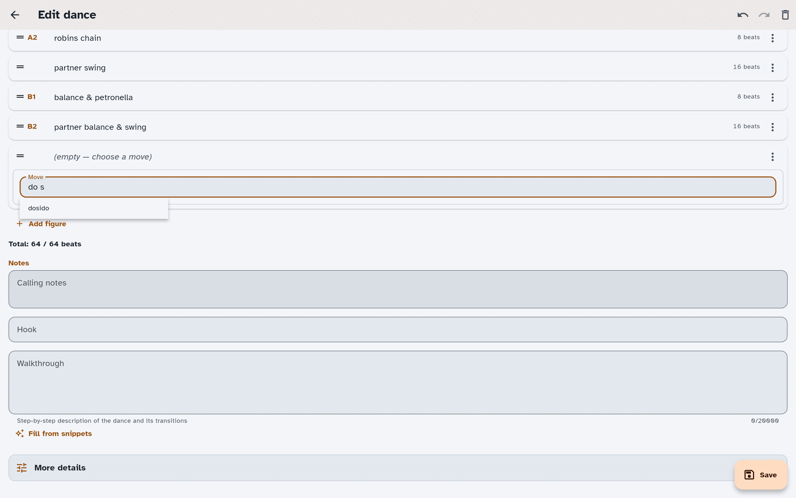

Write & edit dances
Sooner or later you will want to put a dance in yourself — a dance you wrote, one a friend taught you at a festival, or one that came in from an import with a figure the app could not quite read. This guide covers the dance editor: how figures go in, where the notes and credits live, and how the app keeps your work safe while you type.
Finding your way around these words. On-screen buttons and screens are written in bold — like New dance, Save, and Figures. The first time a dance term appears it links to App terms, so you can get a plain-language definition without losing your place.
If you have not entered a dance before, the Getting started guide walks through one end to end. This guide is the fuller reference.
Open the editor
There are three ways in:
- New dance, from your collection — starts a blank dance. The screen is titled New dance.
- Edit, from a dance's detail view — opens that dance. The screen is titled Edit dance.
- Import and edit, on a row in the import review list — brings that one dance in straight away and opens it, so you can fix a stubborn figure while the rest of the import waits for you. It is not covered by the import's Undo.
The editor is a full screen with Save in the corner. The title is the only required field; everything else can stay empty until you know it.
Enter the figures
Figures is the heart of the editor. Each figure is one row, in the order the dance is called, and the app tracks how many beats they add up to as you go.
Type and press Enter
Figure entry is keyboard-first. Choose Add figure (or Add first figure on an empty dance). When the dance can also hold a meanwhile, a modifier or a sequence, the button opens a small menu: press Space or Enter on it and focus lands on Add figure. Press Enter to choose it, use the up and down arrow keys to reach the other choices, and press Escape to close the menu.
With Free-text entry off, Add figure adds a row with its Move box focused. As you type there, the app offers matching moves; press Enter to accept one and it is added with that move's default settings. Typing sw and pressing Enter, for example, gives you a swing.
With Free-text entry on, Add figure opens Type a figure instead: one box that takes a whole line and offers no move suggestions. Press Enter and the line is added; sw typed there on its own is an unrecognized figure, not a swing. See Free-text entry below.
Anything you add that the app cannot recognise is still kept — it becomes a unrecognized figure, holding your text. Nothing you add is ever thrown away because the app did not understand it; the only change is that role words are saved as role terms and shown in your own dialect (see below).
The dance editor while entering figures, with recognized rows and the running beat total visible below the list.

The box stays open after each figure so you can keep going: type, Enter, type, Enter. When you have entered all your figures, choose Finish adding: it adds a line still in the box, as Enter would, and then closes the box. Press Enter on a blank box to close it too. Escape closes the box without adding what is in it.
A line you have typed but not added is not lost if you move on. Save adds it first, as Enter would, and leaving the editor with a line in the box asks Discard changes?.
Free-text entry
Turn on Free-text entry in Settings ▸ Dialect ▸ Dance details & shorthands and the same box accepts a whole line at a time instead of one move at a time. Type neighbor balance & swing and you get one figure, a swing with a balance; type 16 circle left 3/4 and you get a sixteen-beat circle left three-quarters. A line that states no count starts with the figure's usual beats, and they follow the figure if you change its options. Your Move defaults apply as they do when you pick the move, but only to what the line leaves out: with a Move default of a full hey, hey gives a full hey and half hey still a half hey. A line under the box tells you how many figures it added and invites you to type another (a screen reader announces the count too); it goes away when you start typing.
The same works on a figure that is already in the dance. Open it, type a line into its move over what is there, and press Enter: if the line is not simply the name of a move, it is read the same way and the figure is replaced by what you typed, in its place. A line that reads as several figures replaces the one figure with all of them. The figure's note, its walkthrough step and its progression mark are kept, as they are when you pick a new move: the note and the step go on the first of the new figures (after any note you typed with the line) and the progression mark on the last. Typing a move's name and choosing it still works as before. With Free-text entry off, a line typed there is kept as an unrecognized figure holding your text.
Pressing Enter in a figure's Move box chooses, in this order: the move (or your own figure) whose name is exactly what you typed, so star is a star and not a star through; then, with Free-text entry on, your shorthand with that token, so a short token such as rl is not taken for the first move whose name contains it; and only then the first suggestion offered.
If you leave a figure's Move box without pressing Enter, by moving to another box, saving the dance, or closing the figure or opening another one, what you typed is used only when it is exactly a move's name (or one of your own figures' names) or, with Free-text entry on, one of your shorthands. Anything else, such as part of a name, goes back to the move the figure had: leaving the box never picks a suggestion for you or makes an unrecognized figure. On a phone the same goes for closing the list of moves without choosing one. Going back with such a name or shorthand still in the box asks before discarding it.
With Free-text entry on, a new dance starts with no figures, so there are no placeholders to delete first, unless you have saved your own starting figures.
It also understands common phrasings such as N swing, neighbours balance and swing, half hey, ladies start by the right, 1/4 hey, partner start right shoulder and allemande left 1 1/2 with neighbor. When the app reads the start of a line as a figure, the rest of the line becomes that figure's note (neighbors swing slowly is a swing with the note "slowly"). That happens only when the rest cannot change what the figure is. If the rest is and back, a bare number (neighbors swing 16), a turn amount, in figures or in words (petronella twice, petronella two times, circle left 3/4 and pass through, allemande left three quarters), or another move after a comma, and or then (partners balance and swing, end facing down), the whole line is kept as an unrecognized figure, marked unparsed. Otherwise you would get a figure with the wrong beats or turn, with the rest hidden in its note. Use the leading 16 neighbors swing form to set the beats.
Any move's own name typed on its own works, whatever your dialect: hey, mad robin, contra corners, give & take (or give and take, give-and-take), in capitals or not, with or without a full stop, comma or exclamation mark after it (hey.). Your dialect's own name for a move works too. A name on its own gives the figure with its usual options, which you can then change. Put ones, twos, partners, neighbors, everyone, role1s, role2s (or the singular partner or neighbor) in front of the name of a move that takes dancers and they are the dancers: neighbor pass by, ones arch and dive. A move that does not take dancers that way (hey, slice), a word the app does not know in the dancer's place, or anything else on the line stays an unrecognized figure unless the line is read as above. The app also reads hey for four, half hey, full hey, turn as a couple, turn amounts in words (allemande right once and a half), and older role words such as ravens by what they mean (ravens chain is the same as robins chain), unless your own role terms use that word, in which case it means your role. hey for four (or hey for 4) is a full hey, 16 beats, unless you give it a count of 8, as in (8) hey for four, which makes it a half hey.
A count can also be written in brackets, (16) circle left or [16] circle left, and goes at the end as well: circle left (16) or circle left [16]. Any of these can say beats: neighbor swing (16 beats), neighbor swing 16 beats or 16 beats neighbor swing. A count in bars (circle left 4 bars, circle left (4 bars), 4 bars circle left) is kept as a note on the figure ("4 bars") and the rest of the line is read as usual, because how many beats a bar holds depends on the dance's music. The figure keeps the beats it has when you pick it from the list. If the rest of the line is not read as a figure, the whole line is kept as an unrecognized figure, as you typed it. A count is never dropped: if the line states one the app cannot use (a second count on the same figure), the line is kept whole as an unrecognized figure. A line kept as an unrecognized figure keeps your words as you typed them, count included, and the count you gave is also its beats.
A count too long to be beats, five digits or more (circle left 10000 beats, (10000) circle left), is not used as one. The figure is read as usual and takes the beats it has when you pick it from the list, and the number is kept in the figure's note (10000 beats) so you can see it was typed. If the rest of the line is not read as a figure, the whole line is kept as an unrecognized figure, as you typed it. A count that is shorter but more than the 64 beats a figure can take (circle left (100)) keeps the whole line as an unrecognized figure too.
Pasting several lines into the box keeps them as one line, with a space where each line break was; type or paste one figure line at a time to get one figure per line.
A ; between figures makes a list, and each part is read as its own figure: circle left 3/4; turn alone gives two figures, in order. A count stays with the part it follows: circle left (8); turn alone gives the circle 8 beats, and circle left; turn alone (4) gives the turn 4. If any part cannot be read as a figure, or a count cannot be matched to a figure (a part that became a note on the one before it), the whole line is kept as one unrecognized figure instead. A || makes its two sides a meanwhile: circle left || neighbor swing gives one meanwhile group whose sides are the circle and the swing.
As always, anything it cannot parse is kept as an unrecognized figure rather than dropped.
Figure shorthands
If you type the same run of figures over and over, teach it to the app once as a shorthand. Choose Figure shorthands in Settings ▸ Dialect ▸ Dance details & shorthands, then New shorthand:
- Shorthand is the exact line (or the exact part of a
;list) you will type during free-text entry. It is matched without regard to capitals, soNBSandnbsare the same shorthand. A shorthand can be up to 64 characters long. - Expands to is the figure or figures it inserts, in order, up to 64 figures. You build them exactly the way you build a normal figure, with the same options and the same checks.
A shorthand also works with a beat count and in a ; list:
16 pbsandpbs (16)add the shorthand with 16 beats. The count is applied when the shorthand is a single figure. A shorthand for several figures is added exactly as saved and the count is ignored, since there is no one figure to give it to. A token that includes a number, such as3 swings, is matched as typed, before any count is looked for. A count follows the same rules as on any figure line: more than the 64 beats a figure can take (pbs (100)) keeps the whole line as an unrecognized figure, as you typed it, and a count of five digits or more (pbs (10000)) is kept in the figure's note, with the beats the shorthand was saved with.pbs; ladies chainadds the shorthand's figures, then the next figure. Each part can have its own count. As with any;list, if one part is neither a shorthand nor a figure the app understands, the whole line is added as one unrecognized figure instead.
The same counts work on the shorthands for your own figures and for combinations, described below, whether typed into the free-text box or into the Move box of a row you are changing. 16 zm and zm (16) add your figure with 16 beats, in place of the beats the shorthand was saved with, since it is one figure, and a count over 64 keeps the line as an unrecognized figure, as above. A count typed with a combination is ignored: it is added with the beats it was saved with. A shorthand for a plain figure with the same token as the one left after the count is taken off wins, as it does for a whole line.
They also work as one part of a ; list, mixed with shorthands of any kind and with ordinary figures: zm; ladies chain, ladies chain; zm and 16 zm; ladies chain each add a row per part, in the order typed, in the free-text box or in place of the row whose Move box you typed into. Each part takes its own count as above. A combination is one row and counts as one part, however many figures it holds. A list can have at most 64 parts. As with the shorthands above, it is all or nothing: if one part is not a shorthand, a figure the app understands or a shorthand that can be used, the whole line is added as one unrecognized figure instead.
Shorthands are your own; each one has to be unique, and the app tells you if you reuse a token that is already taken. Shorthands are matched before the app tries to read a line as a figure, so a shorthand named for something the app already understands, such as swing, replaces that reading every time you type it. The editor warns you when your shorthand is such a word, but still lets you save it. The app keeps up to 500 of these shorthands; once you have that many, New shorthand tells you so, and you can add another after deleting one. Shorthands only apply while Free-text entry is on.
With Custom Figures on, the same screen also lists Shorthands for your own figures. Choose New shorthand for one of your figures, type the shorthand, pick one of your own figures, a combination or a new figure, and choose the value for each of its parameters; for a new figure, its beats too (left as they are, they follow the figure's own default beats). Typing that shorthand as a whole line adds a row for your figure with those values, as if you had picked it: a combination becomes the figures it stands for when you save the dance, and a new figure stays one figure in your wording. Its token is unique among all your shorthands, of every kind. If its figure has been deleted, or changed so that it no longer accepts the values, the shorthand says so and typing it is read as an ordinary line. Turning Custom Figures off hides these shorthands and stops them working; it doesn't delete them. Each of the two kinds, for combinations and for new figures, keeps up to 500 of its own, separate from the 500 figure shorthands.
A shorthand of any kind works in an existing figure's Move box too: with Free-text entry on, type it there and press Enter, and the figure is replaced by what the shorthand stands for, in the same place in the dance. If the shorthand can't be used (its figure or combination has been deleted, or no longer accepts the values), what you typed is read as an ordinary line instead, the same as for any other text typed there.
Adjust a figure
Select a figure to open it. What you can change depends on the move:
- Parameters — most moves have a few (which role, how far, which way round). Common ones show straight away; choose More options to see the rest, and Fewer options to fold them back.
- Beats — every figure has a beat count you can raise or lower.
- Progression — mark the figure the dance progresses on. Moves that can carry the progression say so.
- Add note — a short note attached to that figure alone.
A figure whose move this version of the app does not know — one added by a newer version, for example — is shown read-only, with a plain explanation. Its data is kept untouched, it edits normally again once the app knows the move, and you can still reorder and delete it in the meantime.
Unrecognized figure
An unrecognized figure has two fields: Unrecognized figure text and Beats.
The Beats field sets how many beats the unrecognized figure occupies — use it the same way you would for any other figure.
The Unrecognized figure text field also accepts two formatting marks, with buttons for both:
*text*for bold_text_for underline
As you type, the app styles what it recognises: move names get a dotted underline, role terms are underlined, and discouraged terms are struck through. The styling is only a hint: it does not change your text while you type. Role words are rewritten when you save, as described next.
Role words you type here (such as "Larks" or "Leads") are saved in a neutral form, shown in your own dialect, and found by role searches. They come back in lower case: "Larks chain wide" shows as "larks chain wide", and "LADIES chain" shows as "robins chain" under Larks and Robins. (If you turn on Capitalize figures in Settings, the first letter is shown capitalized.) Unrecognized figure text saved before this change updates the next time you save the dance while the same dialect is active; text typed in a different dialect may need a manual edit. The same rewriting applies to the everyday and older role words "man", "men", "woman", "women", "lady", "ladies", "gent" and "gents" inside unrecognized figure text (for example, "the man and lady swing"), and to the role names of the built-in dialects ("lark", "robin", "gentlespoon", "ladle" and their plurals). They are saved as role terms and shown in your dialect's words. Words that are also move words are not turned into role terms, here and in figure notes. The move name "mad robin" is kept as the move name and saved in lower case, so "Mad Robin twice" comes back as "mad robin twice". If your dialect uses Leads and Follows, "lead" and "follow" used as verbs ("Ones lead down the hall", "follow your partner up the hall") are kept exactly as you typed them. "Leads chain" and "the lead on the left" still use the role. Text saved by an earlier version is not repaired automatically.
Your own figures
With Custom Figures on (see Settings), the figures you built for the dance's form, in the Glossary or from Settings › Experimental › Your figures, are offered when you choose a figure's move, listed first and marked with a person icon (announced as Custom by screen readers). They are found by their name or by any of their other names. A figure you built has one of two kinds, and each works differently in a dance. (The Glossary can also hold Term entries, which are never offered in a dance.) You can start a figure of your own from one that comes with the app, and rename it or switch to the app's version if a later release adds a figure with the same name; see Glossary and custom figures.
A combination
A combination is offered for a figure in the list itself, not inside a meanwhile, modifier or sequence group.
A combination you pick stays one row while you edit: it shows its name and the value you chose for each of its parameters, and opening it lets you change those values (only values the combination accepts are offered), mark the progression, and add a note. It says how many figures, and how many beats, it becomes.
When you save the dance, the row is replaced by the figures it stands for, filled in with your values, as the combination is defined at that moment, so an edit made in the Glossary since you picked it applies. Your note goes on the first of them and the progression mark on the last. After that they are ordinary figures: the saved dance does not remember that they came from one of yours, and changing or deleting your combination later does not change it.
If your combination has been deleted, has changed so that it can no longer be expanded, or no longer accepts the values on the row, the row says so, and saving keeps it as an unrecognized figure with its name, its beats, and the row's note and progression mark. The values you chose for its parameters are not kept. A row that is one of your combinations cannot be grouped as a meanwhile, modifier or sequence. Turning Custom Figures off stops them being offered, but a row you already picked is still expanded when you save.
A new figure
A new figure is offered for a figure in the list and inside a meanwhile, modifier or sequence group.
A new figure you pick stays one figure, in the dance and once it is saved. It starts with its defaults and its default beats. Opening it lets you choose the value of each of its parameters and its beats (inside a meanwhile or modifier group, the group's beats count; inside a sequence, its own do), mark the progression, and add a note. It reads in the dance with its own wording, filled in with your values.
The dance keeps following your figure: when you change its wording in the Glossary, every dance that uses it reads the new way, on this device. Saving the dance also stores how it reads at that moment, which is what a device without your figure, or with an older version of the app, shows. If you change that line on such a device, it becomes an ordinary unrecognized figure there and stops following your figure.
If your figure has been deleted, the row says so and keeps the line it had. Deleting a figure from the Glossary changes each dance that uses it to that line, as an unrecognized figure. Turning Custom Figures off stops new figures being offered, but a dance that already uses one still reads with its wording.
Reorder, cut, and duplicate
Each figure row has a drag handle and an actions menu. From the keyboard, Tab to the row's ⋮ button and press Space or Enter to open it; the arrow keys move between actions, Enter runs one, and Escape closes the menu:
| Action | What it does |
|---|---|
| Move up / Move down | Shifts the figure one place |
| Cut | Lifts the figure out, ready to place elsewhere |
| Duplicate | Adds an identical figure |
| Group with next as meanwhile | Joins it to the next figure as simultaneous action |
| Group with next as modifier | Makes the first figure the core and the next figure a modifier |
| Group with next as sequence | Joins it to the next figure as one line, danced in order |
| Mark progression / Clear progression | Sets or clears the progression |
| Delete | Removes the figure |
After Cut, a banner names the figure that is waiting and Paste here points appear between the rows — before the first figure, after any figure, and at the end of the list — so you can drop it exactly where you want. Every move, duplication, and deletion is announced for screen readers, and deletions can be undone.
Meanwhile figures
Some dances have two things happening at once — the ones on the ends do one thing while the middles do another. Choose Group with next as meanwhile and the two figures become a meanwhile group, labelled with how many sides it has and sharing one set of beats. Until you type a count for the group, its beats follow its sides: the longest side's, since the sides are danced at the same time. A modifier group follows its Core, and a sequence always adds up its figures (see Sequence figures). This holds however the group was made: grouped, added from the Add menu, typed with || or while, or in a shorthand.
You can also choose Add meanwhile from the list's Add menu to create the group first. It starts with your Meanwhile defaults (see Start new dances the way you work), or two stand-still sides if you have not set any. If you have cleared those defaults you get two blank sides, and a single default side is paired with one blank one. The group is saved with the dance once at least two of its sides are filled in; until then it is not counted in the Total (see Keep an eye on the beats).
Inside the group, each side is labelled Side 1, Side 2, and so on, and has its own controls to move up, move down, or Remove this side. Add side adds another side, up to six.
A note you add to one side, or to one figure of a modifier or sequence group, is shown in brackets after that figure wherever the dance is shown: in the list, on the dance's page, in Perform and when printed. For example, robins allemande right once (1 1/2) while larks orbit. If you choose Customize wording for this dance on the group itself, your wording replaces the whole line, its sides' notes included.
Modifier figures
Use Group with next as modifier when one figure describes the main action and the next describes how it is performed. The first figure is labelled Core and the figures after it Modifier, in order. Add modifier creates a modifier group from your Modifier defaults.
Sequence figures
A sequence is two to four figures danced one after another and written as one line: ones balance and swing, or twos box the gnat, pull by right, and orbit clockwise ½. On its own a sequence reads just like the same figures in separate rows. It is for a run of figures that has to stand in one place, most often one side of a meanwhile group: ones balance and swing while twos box the gnat, pull by right, and orbit clockwise ½. When a figure repeats the dancers of the one before it, the line names them once.
Choose Group with next as sequence, Add sequence from the Add menu, or type sequence in a figure's Move box to make it the first figure of a new sequence. Each figure in the group is labelled Figure 1, Figure 2, and so on, and keeps its own Beats: the group's beats are their total, shown at the top. A sequence must fit in one phrase of the dance (16 beats in the usual structure), so Group with next as sequence is only offered when the two figures fit, and Add next figure goes away once the figures fill a phrase or there are four of them. Changing a figure already in the sequence, its move or its beats, is not stopped, and neither is a change to the phrase structure: if the sequence ends up longer than a phrase, the group and the dance's warnings say so, and you can still save it.
Convert to sequence, Convert to meanwhile and Convert to modifier change a group from one kind to another when its figures fit the new kind. A sequence turned into a meanwhile or modifier group then follows its figures' beats as that kind of group does.
You can put a group inside a group of another kind — a sequence inside a meanwhile, or a meanwhile inside a modifier, for example — one level deep. The app does not allow a group inside another of the same kind, or nesting any deeper.
Keep an eye on the beats
Under the figure list the app shows a running Total against what the dance's phrase structure expects, and says Over by or Under by when the two disagree. It is a nudge, not a rule — you can save a dance whose beats do not add up, and sometimes that is the honest transcription. A saved dance whose beats do not add up shows the same warning above its figures on the dance's page, because the section labels (A1, A2, B1, B2) are then worked out from the wrong total. Perform and printing do not show it.
The Total counts only rows that will be saved. A group that is not complete yet, such as a meanwhile group with one side filled in, is left out, and so is a row with no move. A row with no move but a note is saved as an unrecognized figure holding the note, so the note is not lost.
A row that Save would leave out says so, Not complete, so Save leaves it out, and is listed under Warnings by its figure number. That is a group (meanwhile, modifier or sequence) with fewer than two of its figures filled in, such as a sequence just added with two blank steps; a modifier group with no Core; a group holding such a group; or a row with no move that still holds something other than a note, such as a walkthrough step. Fill it in, or remove it, and the warning goes. A blank row, with nothing chosen or typed, is not listed: there is nothing in it to lose.
Details, notes, and credits
Details
- Title — required.
- Authors — the author or authors of the dance. Type to find an existing author or create a new one.
- Type — Contra, English (ECD), or Square. It sets the icon on the dance's row in your collection and what the Type filter finds. A new dance starts with your default type (see Start new dances the way you work); change it here for any one dance.
- Formation and Formation detail — the shape the dance is danced in, plus anything worth adding in words.
- Mixer — tick this when the dance is a mixer: one where you change partners each time through. It's kept separate from the formation, because a mixer can be danced in many shapes and not every circle is a mixer.
- Phrase structure — leave it blank for the standard A1 A2 B1 B2, or write your own (the field suggests
6*8*2as an example). The app checks that what you write is a valid structure, and uses it for the beat count above.
Notes
- Calling notes — how you call it, what to watch for.
- Hook — one line on why you would call this dance.
- Walkthrough — the step-by-step teach.
Walkthrough
You can write the walkthrough as free prose, or build it from your figures.
Each figure can carry an Add walkthrough step description. What you write there is saved as your default for that figure and reused wherever it appears — so the way you teach a hey is written once and follows you into every dance with a hey.
Two things follow from that:
- Fill from snippets assembles a walkthrough from the saved snippets of the dance's figures. If it would overwrite something, the app asks first. If none of the figures has a snippet yet, it says so rather than emptying the field.
- If you edit a step so it no longer matches your saved snippet, the app asks Update your saved snippet? — choose Use everywhere to update the default, or Just this dance to keep the change local.
Your whole library of snippets lives at Settings ▸ Dialect ▸ Dance details & shorthands ▸ Walkthrough snippets, where you can review and edit them. Editing one there updates the default used everywhere.
More details
More details expands to everything else a dance can carry:
| Field | Notes |
|---|---|
| Level and Status | How hard it is, and where it is in your workflow |
| Mixed level | For dances that span the difficulty scale |
| Rating | Your own star rating, with Clear rating to unset it |
| Composed / Revised | A year, optionally with a month and day |
| Tags | Your own labels |
| Tunes | Tunes you like with this dance |
| Links | A URL with an optional label, marked Source, Video, or Other |
| Published sources | Citations, with optional page and number |
| Related dances | Cross-references to other dances, each with an optional note |
| Custom fields | Any custom fields you have defined — see Collection & search |
To tie a whole family of dances together — several variations of one dance, say — turn on Include in related-dance group for the link. Every dance in the group is then linked to every other one. Removing a group link breaks up that whole group, while ordinary related-dance links are left alone.
If the editor spots wording it considers discouraged, it collects it under Warnings with the term named. Nothing is blocked; it is there so you can decide.
Author and source details are shared
Choose to edit an author's details and you get Author details — name, website, email, location, notes, and whether they are deceased. The dialog is explicit about two things, and both matter:
- These details are shared across every dance credited to that author, so correcting a spelling here corrects it everywhere.
- If you rename an author to a name another author already has, the app offers to merge them into one, listing any details it would drop because the two disagree. Keep editing takes you back to what you typed. After a merge, every dance that credited either author credits the one that's left, this dance included, and Undo in the message at the bottom of the screen puts both back. The same merge is in Settings → General → Library → Authors; see Settings.
- Email and location are private, and so is the deceased mark. They are stored only on this device and are never shared or exported. See Share, print & export for exactly what leaves the app.
Source details works the same way: a source's details are shared across every dance that cites it, and editing them here updates the source everywhere it is referenced.
Undo, drafts, and saving
Undo and redo
Undo and Redo sit in the editor's top bar, with keyboard shortcuts:
| Action | Linux / Windows | macOS |
|---|---|---|
| Undo | Ctrl-Z | Cmd-Z |
| Redo | Ctrl-Shift-Z or Ctrl-Y | Cmd-Shift-Z |
The tooltips on the Undo and Redo buttons show the shortcut for your platform.
Figure keyboard shortcuts
With a keyboard attached, these work on the figure list in the dance editor:
| Action | Linux / Windows | macOS |
|---|---|---|
| Move the focused figure up or down | Alt-↑ / Alt-↓ | Option-↑ / Option-↓ |
| Commit the figure you are editing and open the next (or add one at the end) | Ctrl-Enter | Cmd-Enter |
Your work is kept while you type
The editor keeps a draft as you work. If the app closes before you save — a crash, a flat battery, a phone that decides to reboot — the next time you open that dance the app offers you the draft back:
Unsaved draft — You have an unsaved draft for this dance. Would you like to restore it?
The prompt also says when the draft was saved. If the dance has changed since then — a tag or rating set on several dances at once, a change from Device Sync, or Re-check unrecognized figures — it says so: restoring the draft puts back the dance as the draft has it, so those later changes are replaced.
Choose Restore to pick up where you left off, or Discard to start from the last saved version.
The draft is written about half a second after you stop typing, and at once when you switch away from the app on a phone or tablet, or close it on a computer, so even the last few keystrokes are kept. Drafts stay on your device; they are never uploaded, shared, or included in exports.
If the app cannot write the draft — the device is out of storage space, for example — a small cloud-with-a-slash icon appears in the top bar of the dance editor and the program editor, and its tooltip says Draft not saved. Your edits stay on screen and you can keep working, but nothing is being kept in case the app closes. Free up space, or save the dance or program now. The icon disappears by itself the next time a draft is written. The app also notes the first such failure in Diagnostics (by error type only, never your text).
Each new dance keeps its own draft. If a new dance you never saved left one behind, the next new dance you start offers it back by its title — You have an unsaved draft of another new dance — so you can Restore it and carry on with that dance, or Discard it and start fresh. A new dance you start from a program slot is that slot's dance, so it does not offer one; the draft waits for the next new dance you start from the collection.
A restored draft keeps the beat counts you typed by hand as typed, the same as undo and redo do, and figure notes come back in the dialect you use now, even if you changed dialects since the draft was saved.
Leaving without saving
If you try to leave with unsaved changes, the app asks Discard changes? — Keep editing (the highlighted button) returns you to the dance, and Discard (in red) leaves it as it was last saved.
The editors for figure shorthands, custom themes, venues and custom fields ask the same question when you leave one with changes: by Back, the back arrow, or a tap outside the venue or custom-field sheet. Those two sheets do not close when swiped down, and their Cancel button closes them without asking.
Save and delete
Save writes the dance and returns you to where you came from; the change shows in your collection straight away. If a save fails, the app says so and leaves your work in the editor so you can try again.
Delete dance (in the top bar, on an existing dance) removes the dance. As everywhere else in the app, deletion is a soft delete with an Undo offered right away — see Keep your collection tidy.
Start new dances the way you work
If most of your dances share a shape, set that shape once. Settings ▸ Defaults ▸ Dance-authoring defaults decides what a New dance starts as:
- Type, Formation, and Progression — what a new dance begins with.
- Default phrase structure — seeded into new dances; blank means the standard 4×16 (A1 A2 B1 B2).
- Starting figures — the figures a new dance starts with. It defaults to eight stand stills of eight beats each, or to no figures while Free-text entry is on; clear it for a completely blank dance.
- Meanwhile defaults and Modifier defaults — the figures a new meanwhile or modifier group starts with.
- Move defaults — your preferred parameter values, applied whenever you insert that move, whether you pick it or type it. These override the move's built-in defaults, but not a value you type in the line, and you can still change any parameter on the figure afterwards.
- Aggressively recompute figure beats — off by default, so a beat count you typed yourself is left alone, except that switching a balance option on or off adds or removes 4 beats. Turn it on and changing a figure's move, or an option that affects its timing, recalculates its beats straight away, even over a count you typed.
Every one of these is only a starting point; you can change any of them on any dance.
Fix figures an import could not read
Imported dances sometimes arrive with figures kept as plain text because the app could not recognise them at the time. As the app's figure recognition improves, those can often be upgraded.
In Settings ▸ General ▸ Import, find Re-check unrecognized figures and choose Re-check…. The app scans your collection and shows you what it could upgrade before anything changes: how many figures, in how many dances, and which ones. You confirm, and only then does anything happen.
Your tags, ratings, notes, and everything else on each dance are kept exactly as they are — only figures that now recognise a known move are replaced. If there is nothing to upgrade, the app tells you that and leaves your collection alone.
A dance whose stored figures the app cannot read at all is left out of the scan rather than upgraded, and its stored text is not touched. The dance's own page tells you when its figures cannot be read.
Where to go next
- Find and organize what you have entered: Collection & search
- Bring dances in rather than typing them: Imports & migration
- Put figures into your own words: Dialect
- Build an evening from your dances: Programs & matrix
- Hand a dance to someone else: Share, print & export
- Using assistive technology or large text? The Accessibility guide covers screen readers, text size, high contrast, and keyboard use.
Not sure what a word means? App terms has plain definitions for every term used across these guides.